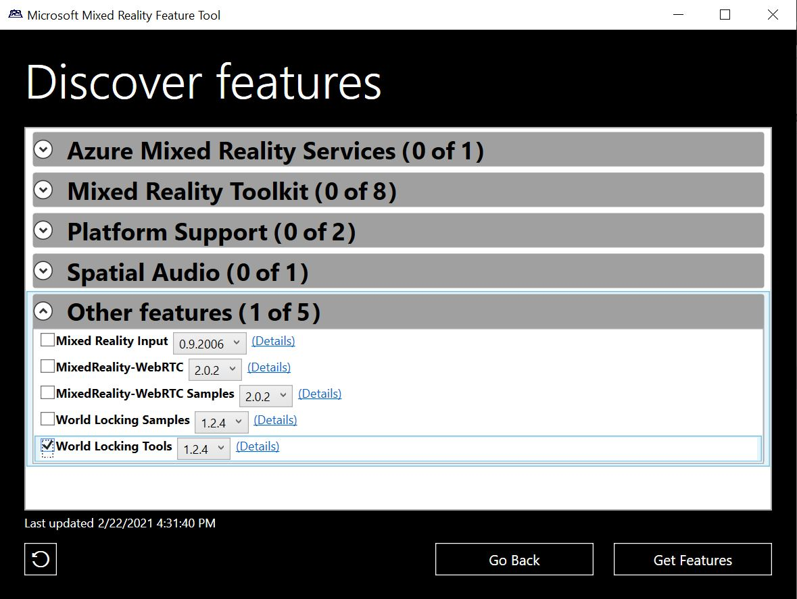
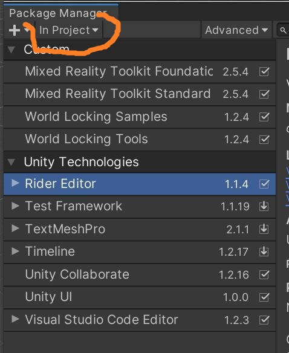
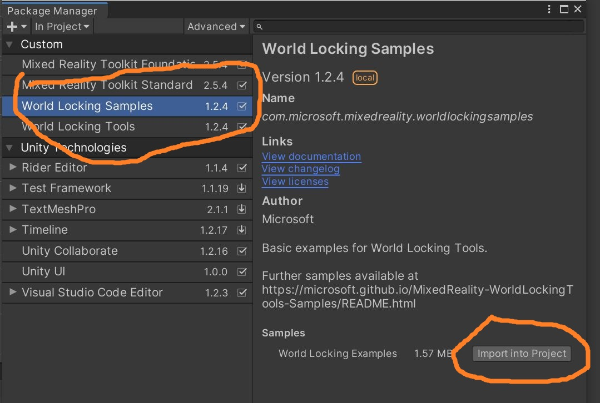
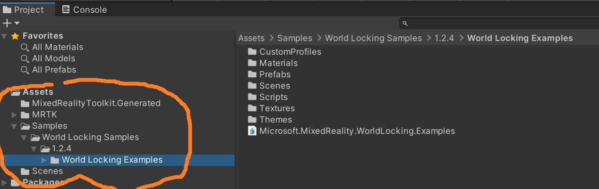
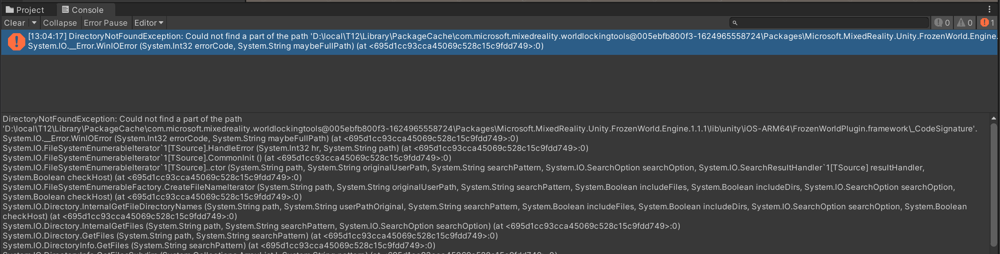

Using the Mixed Reality Feature Tool to install World Locking Tools
The MR Feature Tool
The Mixed Reality Feature Tool can be an extremely useful way to get the World Locking Tools, as well as other valuable Mixed Reality packages for Unity.
More information on the MR Feature Tool can be found in its online documentation, but it is extremely easy to use.

Installing WLT via MR Feature Tool
To get the full WLT functionality, simply select the latest version of "World Locking Tools" from the MR Feature Tool. Then proceed to adding WLT to a scene, or the quick start guide.
If getting the samples (which also requires MRTK), it is not necessary to first install the dependencies. Simply select the Samples package and the minimal set of required dependencies will also be installed. But see below.
Note
TL;DR version - If installing from the MR Feature Tool, you must install into a folder whose path length is 11 characters long or less, including the drive. This is explained in greater detail at the end of this article. So e:\stuff\T1 will work, but e:\stuff\T12 won't.
Samples in the MR Feature Tool (writable packages)
As mentioned above, the MR Feature Tool and UPM install packages as read-only resources. For samples, that is inconvenient, because much of the value of samples is in supplying volatile assets which can be modified for experimentation.
To enable this, samples installed by the MR Feature Tool (or UPM) follow a slightly different path. Installing them is a two part process.
The first part proceeds just as installing the read-only packages. However, after that installation, the samples will not yet appear in Assets or Packages.
To finish importing the samples into your project:
Open the Unity Package Manager
If the Package Manager is set to "Unity Registry", change it to "In Project"

Find the Samples you want to finish installing. Here we are targeting "World Locking Samples v1.2.4".

Hit the "Import into project" button.
The examples will now appear under a Samples folder in Assets, as shown here. They can be relocated to suit your project's organization.

Differences between installation methods
There are some subtle considerations when deciding which installation method to use.
MR Feature Tool (UPM packages)
A major driver for the MR Feature Tool is package dependencies. A package in the MR Feature Tool can specify other packages which need to be installed in order for it to work properly. The Feature Tool can then acquire and install, not just the package you are requesting, but all of its dependencies as well. After the Feature Tool has processed your requested installation, there are no other installations you need to track down.
The biggest difference between resources acquired through the MR Feature Tool (or UPM) versus resources acquired from .unitypackage files, is that the former are installed write-only, whereas the latter are dropped in just like your own resources.
Note that when acquiring WLT via the Feature Tool, the Frozen World Engine DLL is brought in as a dependency. No manual installation via NuGet is necessary.
WLT releases (.unitypackage files)
WLT publishes periodic releases, which are considered very stable snapshots. These are available on the World Locking Tools Releases page.
As mentioned above, the result of importing these .unitypackage files into your project is the same as if you copied in the source (see below). The scripts and assets are writeable, and can be rearranged to fit your structure.
The dependency chain is very simple, but it is the responsibility of the installing client (you) to install the dependencies as well as the package you want.
The simple dependency graph is linear. In the following list, each item depends on every item above it, but on no item below it:
- Frozen World Engine DLL (from NuGet, see installation instructions)
- World Locking Core Engine
- World Locking Tools
- World Locking Samples (also depends on MRTK, but MRTK is included in .unitypackage)
From GitHub code (copy in source)
Another option for acquiring WLT is to get the source directly from GitHub (either via git or as a zipfile) and copy it into your project. This is equivalent to installing from the .unitypackages above.
To get the source matching a release, find the appropriate branch. For example, the source for release v1.2.4 is in branch release/v1.2.4.
About the installation path length limit
When installing from Mixed Reality Feature Tool
Windows imposes a maximum path length of 260 characters. The Frozen World Engine package has some very long internal paths. The Mixed Reality Feature Tool (or Unity's UPM, depending whom you want to blame), adds some very long strings in the middle.
You will know if you have passed the MAX_PATH limit if you see errors in the Unity Console complaining about not being able to find part of a path.

Again, the installation path e:\stuff\T1 will work, but e:\stuff\T12 will be too long.
Ironically, the first file to hit the limit isn't even used on Windows, it's for the iOS build (iOS doesn't have the MAX_PATH limit). WLT will build and run fine without it. However, the existence of the file will interfere with the running of some important MRTK scripts, and probably destabilize Unity in other subtle ways.
When installing from .unitypackage files or from github
Without the UPM/MRFeatureTool inserting characters into the installation paths, there is a bit more breathing room. However, the internal path hierarchy within the Frozen World Engine is still quite deep. When installing from unitypackage files or from github, the installation folder should be about 100 characters long or less.
There are more investigations and discussions in this WLT issue.